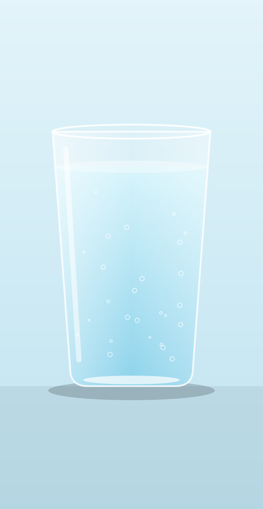
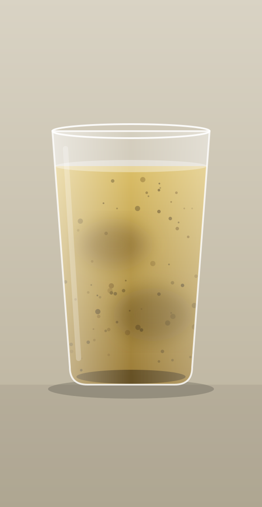
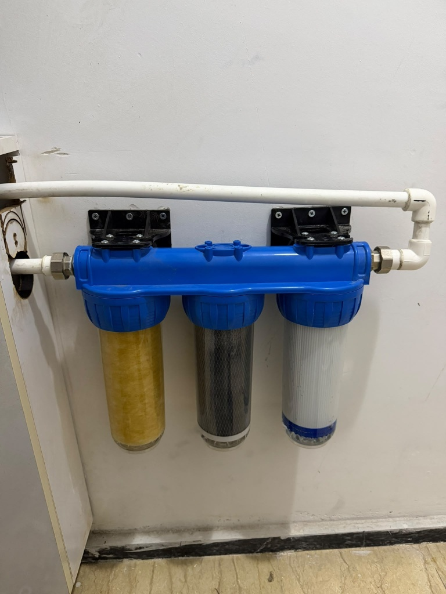
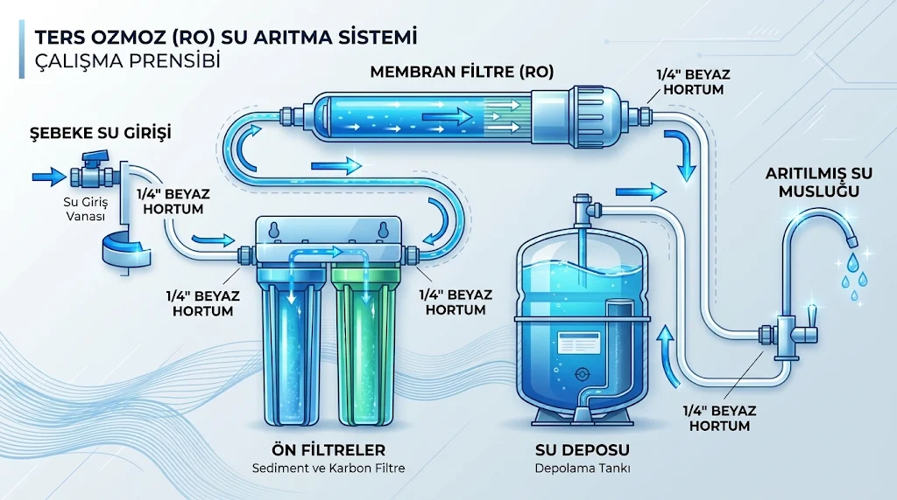
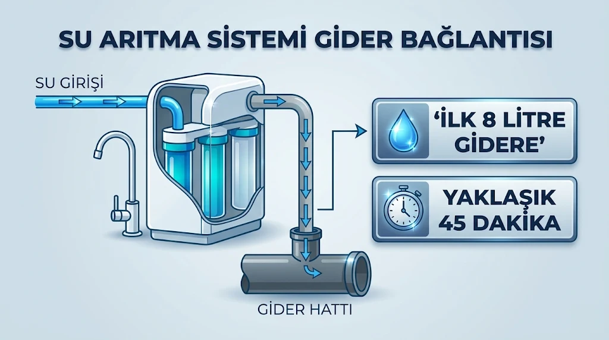

Mutfağınızdaki suyun ustası.
Su arıtma cihazınızın filtre değişimi, kurulumu ve bakımı tek elden. Hizmet bölgemiz: Tekirdağ / Çerkezköy.
Su kadar sade, filtre kadar titiz bir hizmet.
Mutfaktaki su arıtma cihazı, filtreleri zamanında ve doğru sırayla değiştirildiğinde işini yapar. Biz bu işi sahada, cihazınızın başında yapıyoruz: filtreyi söküyor, yenisini takıyor, yeni filtreleri yıkıyor ve bağlantıları kontrol ediyoruz.
Sıfırdan cihaz kurulumu da yapıyoruz. Derdinizi söyleyin, gerisini biz halledelim.
İki şişe, tek fark: filtre.
Çizgiyi sürükleyin ya da klavyedeki ok tuşlarını kullanın. Solda filtre öncesi su, sağda filtre sonrası su görünüyor.
Not: Bu görsel anlatım amaçlı bir çizimdir; gerçek bir su analizini göstermez. Gerçek şişe fotoğraflarını “Yaptığımız işler” bölümünde bulabilirsiniz.

ÖNCESONRA
Dört iş, tek ekip.
Filtre değişimi
Mutfak su arıtma cihazınızın filtreleri doğru sırayla sökülür, yenileri takılır.
Cihaz kurulumu
Yeni cihazınız su girişine, gider hattına ve musluğa bağlanır; çalışır halde teslim edilir.
Bakım ve kontrol
Bağlantılar, hortumlar ve filtre durumu kontrol edilir; kaçak ve tıkanma aranır.
Sistem yenileme
Yıpranmış bir sistem, ihtiyacınıza göre filtreleriyle birlikte yenilenir.
Takmak yetmez, doğru başlatmak gerekir.
Yeni takılan filtreler ve membran yıkanır; kurulum sonrası ilk 8 litre gidere verilir ve bu işlem yaklaşık 45 dakika sürer. Şemalar çalışma mantığını anlatan açıklayıcı çizimlerdir.


Sahadan gerçek kareler.
Her fotoğraf bizim uygulamamız. Büyütmek için dokunun.
Neden Filtrerya?
- Tek elden hizmetFiltre değişimi, kurulum ve bakım için tek telefon yeterli.
- Doğru sıra, doğru başlangıçFiltreler sırasıyla değişir, yeni filtreler yıkanır, ilk su gidere verilir.
- Yerinde çalışmaİşi cihazınızın başında yapar, bağlantıları gözünüzün önünde kontrol ederiz.
- Doğrudan ulaşımAracı yok. Ustalarla doğrudan telefonla konuşursunuz.